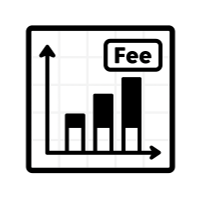
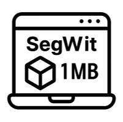
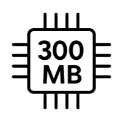

The mempool is a temporary holding area for transactions awaiting inclusion in a block. Each full node maintains its own copy, updating every minute. If your node restarts, it flushes and rebuilds its mempool.
Transactions are stacked by fee rate (satoshis per virtual byte):
A new block typically clears the highest-fee transactions—about 1 MB worth—first. If low-fee transactions linger for hours, it signals sustained congestion at higher fee tiers.

Dynamic Charts: Time on the X-axis (2 hours to full history); switch the Y-axis between:
Customizable Views: Click a fee-rate legend item to hide all lower tiers, isolating competing transactions at your chosen rate.
All sizes use vbytes to reflect SegWit discount. Blocks cap at 1 vMB even if raw data exceeds 1 MB. Transactions at stripe boundaries are rounded up; free transactions are excluded.


Default mempool cap is 300 MB (full size), which equates to roughly 50–120 vMB depending on txn composition. Understanding this helps you gauge when your transactions might be dropped.
What are cryptocurrency transaction fees?
Fees compensate miners for processing and securing your transaction.
What does ‘weight’ mean?
Weight measures block space usage, giving SegWit transactions a discount.
How often is data updated?
Charts refresh in real time, ensuring you see the latest mempool state.